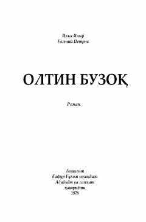

OBOstap Bender sarguzashtlari haqidagi mashhur satirik roman.
Bu asar mashhur satirik roman bo'lib, unda turli firibgarlar va sovet tuzumidagi illatlar hajv qilinadi. Roman "O'n ikki stul" asarining mantiqiy davomi hisoblanib, bosh qahramon Ostap Bender sarguzashtlarini hikoya qiladi.